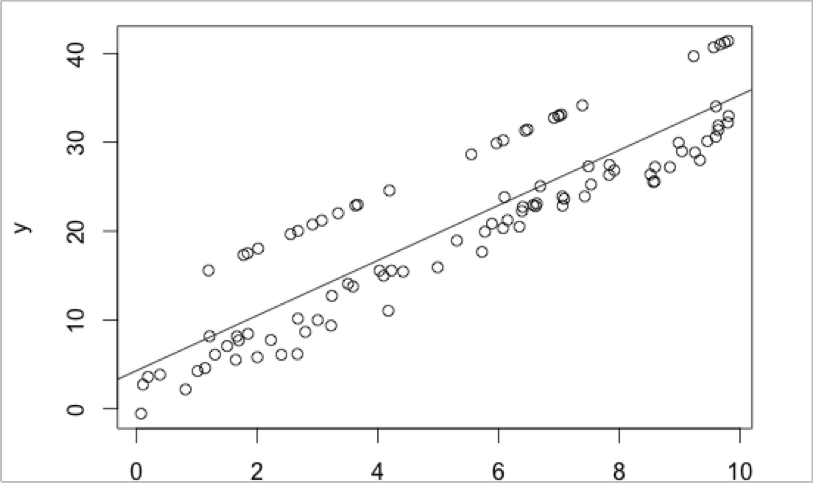

Fundamentals of
Data Analytics and
Predictions
Visualization
Xi (Rossi) LUO
Department of Biostatistics and Data Science
School of Public Health
The University of Texas Health Science Center at Houston
Introducing Visualizations
- “The simple graph has brought more information to the data analyst’s mind than any other device”
– John Tukey
- Data sets are increasingly complicated
- When no parametric models can be proposed a priori, visualization techniques can be very
important
- Visualization can be used to find some regularity in the data strong enough that modeling can
say something about it
- Say we have 97 pairs (x,y)
- What kind of model could you build to predict Y?
Initial Example w/ Regression—1
If fit a linear regression, we get R-squared = 0.80, p-value < 0.001. Seems like a good fit!
Initial Example w/ Regression—2
Initial Example w/ Regression—3

Initial Example w/ Regression—4
- There appear to be two clusters in the data and the regression line doesn’t fit either of them
very well!
- In practice, hopefully would be able to use clustering to identify two clusters and fit a model
to each cluster
- Be careful: inference after data snooping by visualization, like those after dimension reduction
and clustering, will necessarily be much weaker
- Looking at the data uses up degrees of freedom
Visualization Considerations
- Can look at data to underscore key qualitative features
- Data continuous or categorical?
- Ordered or unordered
- Dependent or independent
- General rule for constructing graphs: Choices of how to plot should not lead to incorrect
inferences
- Position along a scale (common or not, aligned or not)
- Coloring, choice of symbol, motion, and adjacency on the page of different components affect
the message a viewer will perceive
Data Exploration
- Profiles and Stars
- Profiles: Representation of a vector of the form (ùë•_1,..,ùë•_ùëù) in which values ùë•_ùëó are
plotted adjacent to each other.
- Stars: representation of the p-dimensional vector which the values ùë•_ùëó are plotted on axes
drawn from a center point. They are connected to form a p-gon for each observation.
Heat Maps
- Matrix of values that have been color coded (higher values are brighter and lower values are
darker, like temperature)
- Can suggest patterns in the data
- Car data:
- Data from 1974 US magazine Motor Trend
- 11 aspects of automobile design and performance
Chernoff Faces
- Chernoff (1973) recognized that people are sensitive to small differences in faces
- To visualize high-dimensional data
- P-dimensional data point is converted to a list of values that specify features of a human face.
- E.g., height of a face, width of a face, etc.
- Subjective and depends on how the columns of X are converted to facial features.
- R allows a maximum of 15 variables
rattle
- install.packages("rattle")
- Used for data manipulation, exploration, analysis, and evaluation in Data Mining
ggobi
- Install ggobi onto your computer
- www.ggobi.org
- Then in R, you can access it via the library “rggobi”
- This is used in other packages as well. Currently rggobi is not available in CRAN, possibly due
to some issues with bugs.
- Outdated though
plotly
- Free and commercial versions available
- Good integration of colors, themes, interactions
- Gaining a lot of popularity recently
- https://plotly.com/